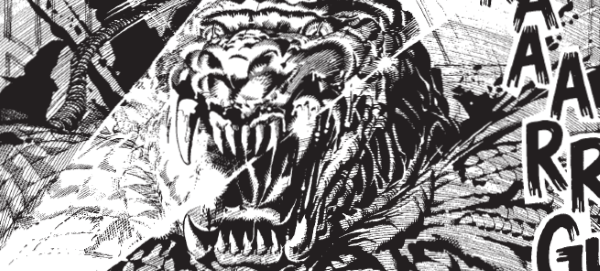

Satanus is the T-rex son of Old One Eye from Flesh. He was cloned in the future and became a denizen of The Cursed Earth, while also spending some time (time-traveling) with Thoth, the son of Nemesis. His offspring, Golgotha, is a character in The A.B.C. Warriors. The blood of Satanus also infects victims with a transformative disease that turns them into vicious humanoid reptiles.
Satanus is one of the few characters to provide a concrete link between the Millsverse and the Dreddverse, which otherwise don't naturally gel their narrative timelines.
Art by Ron Smith
| Story Title | Parts | Pages | w indicates a wraparound coverCovers | Year(s) | Issues | Writer | Artist | Colourist | Letterer |
|---|---|---|---|---|---|---|---|---|---|
From Judge Dredd ‑ The Cursed EarthThe Coming of Satanus | 1 | 7 | 0 | 1978 | 73 | Pat Mills | Mike McMahon | <-- pp1-2, [b&w] | Tom Frame |
From Judge Dredd ‑ The Cursed EarthFor Whom the Bell Tolls | 1 | 7 | Mike McMahon 1 | 1978 | 74 | Pat Mills | Mike McMahon | <-- pp1-2, [b&w] | Tom Frame |
From Judge Dredd ‑ The Cursed EarthPicnic at Black Rock | 1 | 6 | 0 | 1978 | 75 | Pat Mills | Mike McMahon | <-- p1, [b&w] | Tom Frame |
From Judge Dredd ‑ The Cursed EarthBlack Sabbath | 1 | 6 | 0 | 1978 | 76 | Pat Mills | Mike McMahon | <-- p1, [b&w] | Tom Frame |
From Judge DreddThe Blood of Satanus | 3 | 15 | 153: Ron Smith 1 | 1980 | 152-154 | Pat Mills | Ron Smith | [b&w] | Tom Frame |
| Unchained | 6 | 30 | 1244: Jim Murray 1 | 2001 | 1241-1246 | Gordon Rennie | Colin MacNeil | <-- | Ellie de Ville |
From Judge DreddBlood of Satanus II: Dark Matters | 4 | 32 | M215: Chris Weston 1 | 2003-2004 | M214-M217 | Pat Mills | Duke Mighten | [b&w] | Ellie De Ville: 1‑4 Annie Parkhouse: 3‑4 Ellie de Ville |
From Judge DreddBlood of Satanus III - The Tenth Circle | 9 | 73 | M259: John Hicklenton & Clint Langley M263: Kev Crossley M265: Bryan Talbot 3 | 2007 | M257-M265 | Pat Mills | John Hicklenton | [b&w] | Simon Bowland |
| >> Features << | |||||||||
| The Satanus File | 1 | 2 | 0 | 1985 | 436 | Pat Mills | Ramon Sola Mike McMahon Carlos Ezquerra reprints | [b&w] | n/a |
From The History of Justice After prog 74 cover.The Cursed Earth: Progs 61-85 | 1 | 1 | 0 | 1985 | 437 | n/a | Brian Bolland | <-- | n/a |
| year | episodes | pages |
| 1977 | 0 | 0 |
| 1978 | 4 | 26 |
| 1979 | 0 | 0 |
| 1980 | 3 | 15 |
| 1981 | 0 | 0 |
| 1982 | 0 | 0 |
| 1983 | 0 | 0 |
| 1984 | 0 | 0 |
| 1985 | 0 | 0 |
| 1986 | 0 | 0 |
| 1987 | 0 | 0 |
| 1988 | 0 | 0 |
| 1989 | 0 | 0 |
| 1990 | 0 | 0 |
| 1991 | 0 | 0 |
| 1992 | 0 | 0 |
| 1993 | 0 | 0 |
| 1994 | 0 | 0 |
| 1995 | 0 | 0 |
| 1996 | 0 | 0 |
| 1997 | 0 | 0 |
| 1998 | 0 | 0 |
| 1999 | 0 | 0 |
| 2000 | 0 | 0 |
| 2001 | 6 | 30 |
| 2002 | 0 | 0 |
| 2003 | 1 | 8 |
| 2004 | 3 | 24 |
| 2005 | 0 | 0 |
| 2006 | 0 | 0 |
| 2007 | 9 | 73 |
| 2008 | 0 | 0 |
| 2009 | 0 | 0 |
Comic strip data (excludes other content):